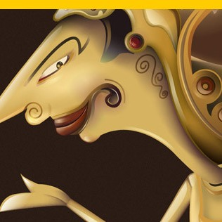
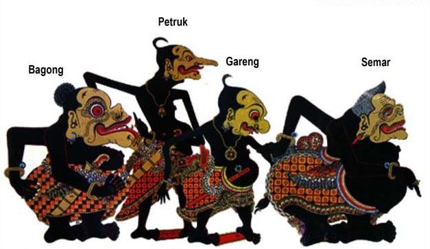
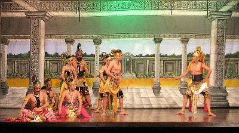

Wayang

Wayang Kulit

Wayang kulit adalah seni tradisional Indonesia yang terutama berkembang di Jawa. Wayang berasal dari kata 'MaHyang' yang artinya menuju kepada roh spiritual, dewa, atau Tuhan Yang Maha Esa. Ada juga yang mengartikan wayang adalah istilah bahasa Jawa yang bermakna 'bayangan', hal ini disebabkan karena penonton juga bisa menonton wayang dari belakang kelir atau hanya bayangannya saja. Wayang kulit dimainkan oleh seorang dalangyang juga menjadi narator dialog tokoh-tokoh wayang, dengan diiringi oleh musik gamelan yang dimainkan sekelompok nayaga dan tembang yang dinyanyikan oleh para pesinden.
Dalang memainkan wayang kulit di balikkelir, yaitu layar yang terbuat dari kain putih, sementara di belakangnya disorotkan lampu listrik atau lampu minyak (blencong), sehingga para penonton yang berada di sisi lain dari layar dapat melihat bayangan wayang yang jatuh ke kelir. Untuk dapat memahami cerita wayang (lakon), penonton harus memiliki pengetahuan akan tokoh-tokoh wayang yang bayangannya tampil di layar.
Secara umum wayang mengambil cerita dari naskah Mahabharata dan Ramayana, tetapi tak dibatasi hanya dengan pakem (standard) tersebut, ki dalang bisa juga memainkan lakon carangan (gubahan). Beberapa cerita diambil dari cerita Panji.
Pertunjukan wayang kulit telah diakui oleh UNESCO pada tanggal 7 November 2003, sebagai karya kebudayaan yang mengagumkan dalam bidang cerita narasi dan warisan yang indah dan berharga ( Masterpiece of Oral and Intangible Heritage of Humanity ). Wayang kulit lebih populer di Jawa bagian tengah dan timur.
Sumber : https://id.wikipedia.org/wiki/Wayang_kulit
Wayang Orang

Wayang orang disebut juga dengan istilah wayang wong (bahasa Jawa) adalah wayang yang dimainkan dengan menggunakan orang sebagai tokoh dalam cerita wayang tersebut. Wayang orang diciptakan oleh Sultan Hamangkurat I pada tahun 1731.
Sesuai dengan nama sebutannya, wayang tersebut tidak lagi dipergelarkan dengan memainkan boneka-boneka wayang (wayang kulit yang biasanya terbuat dari bahan kulit kerbau ataupun yang lain), akan tetapi menampilkan manusia-manusia sebagai pengganti boneka-boneka wayang tersebut. Mereka memakai pakaian sama seperti hiasan-hiasan yang dipakai pada wayang kulit. Supaya bentuk muka atau bangun muka mereka menyerupai wayang kulit (kalau dilihat dari samping), sering kali pemain wayang orang ini diubah/dihias mukanya dengan tambahan gambar atau lukisan.
Pertunjukan wayang orang yang masih ada saat ini, salah satunya adalah wayang orang Barata (di kawasan Pasar Senen, Jakarta), Taman Mini Indonesia Indah, Taman Sriwedari Solo, Taman Budaya Raden Saleh Semarang, dan lain-lain.